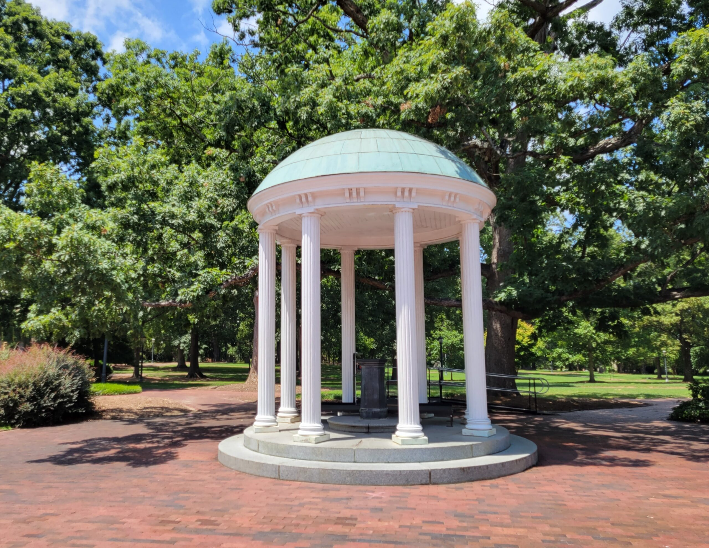

<!DOCTYPE html>
<html>
<head>
    <title>UNC Old Well Interactive Map</title>
    <link rel="stylesheet" href="https://unpkg.com/leaflet@1.9.4/dist/leaflet.css" />
    <style>
        #mapid { width: 900px; height: 500px; margin: 20px auto; border: 2px solid #ccc; }
    </style>
</head>
<body>
    <div id="mapid"></div>
    <script src="https://unpkg.com/leaflet@1.9.4/dist/leaflet.js"></script>
    <script>
        var map = L.map('mapid').setView([35.9121, -79.0514], 17);

        L.tileLayer('https://{s}.tile.openstreetmap.org/{z}/{x}/{y}.png', {
            attribution: '&copy; <a href="https://www.openstreetmap.org/copyright">OpenStreetMap</a> contributors'
        }).addTo(map);

        var customIcon = L.icon({
            iconUrl: 'CUSTOM MARKER.png',
            iconSize: [50, 41],
            iconAnchor: [25, 41],
            popupAnchor: [0, -41]
        });

        var marker = L.marker([35.9121, -79.0514], { icon: customIcon }).addTo(map);

        marker.bindPopup(`
            <h3>The Old Well</h3>
            <p>The Old Well is a landmark and it is the peak supreme symbol of UNC-Chapel Hill. Main logo for the campus.</p>
            
        `);
    </script>
</body>
</html>
